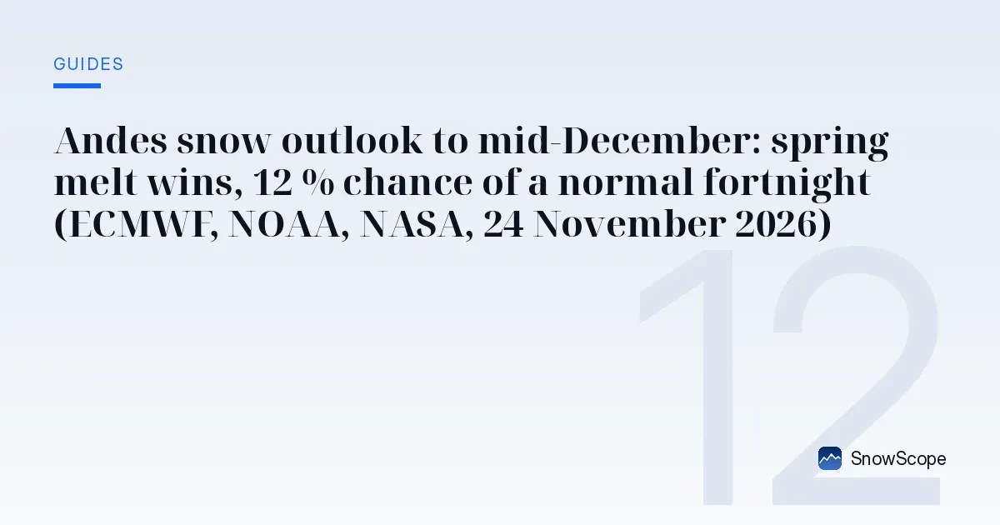
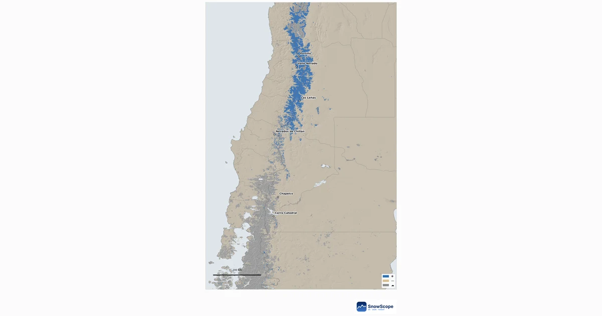
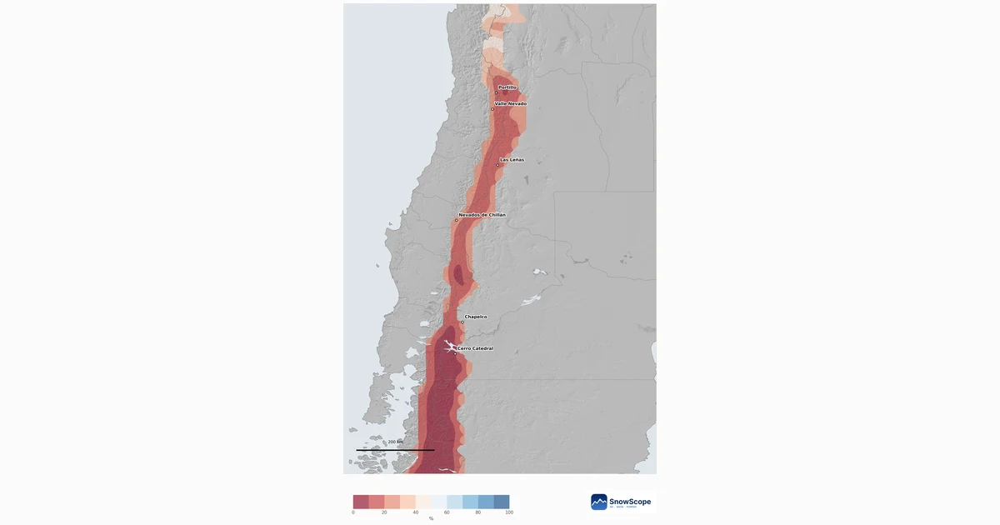
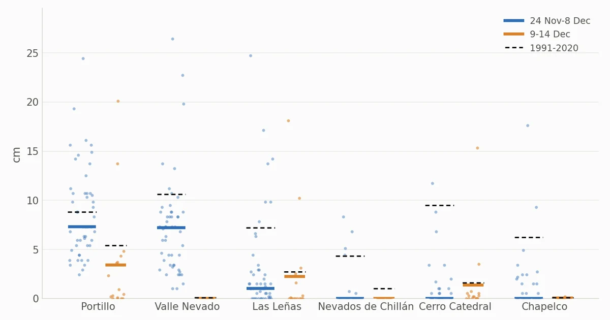
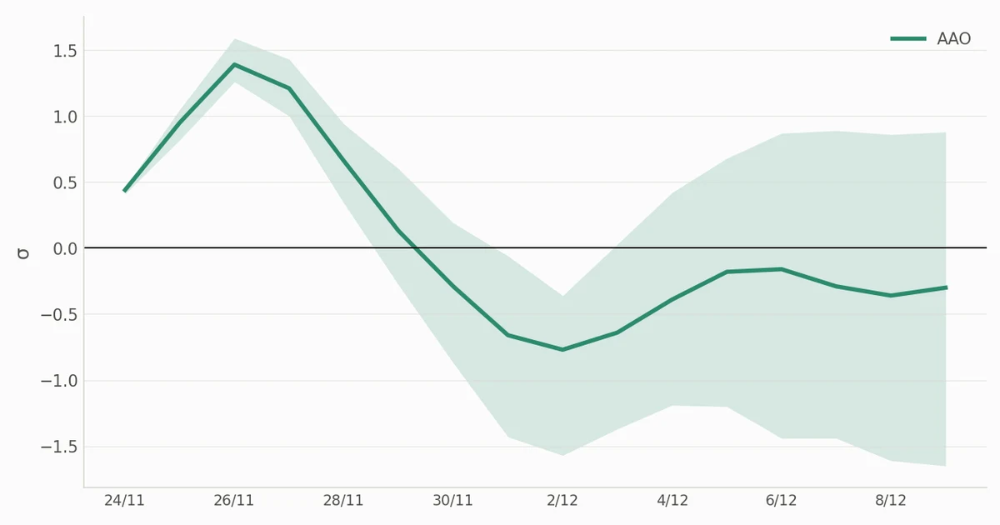

Andes snow outlook to mid-December: spring melt wins, 12 % chance of a normal fortnight (ECMWF, NOAA, NASA, 24 November 2026)
In the southern hemisphere, late November is late spring, and the Andes are losing their snow from the bottom up. NASA's MODIS puts the snow line near 3,000 m between 30° and 45° S this week, and the next two weeks will not change that much. Over the mountain cells above 1,500 m, the 50-member ECMWF ensemble of 24 November gives 2.9 mm of snow water by 8 December against a 1991-2020 normal of 5.4 mm, and only 12 % of the members beat that normal. A few light falls are possible on the high summits of central Chile, little or nothing in northern Patagonia.
See the live snow forecast for Portillo in the SnowScope appSnow depth, powder alerts and the 3D map, free.

Snow on the ground: NASA MODIS
Combining Terra and Aqua and keeping the last clear look of each 500 m pixel from 16 to 23 November, MODIS sees 39,903 km² of snow above 1,500 m between 30° and 45° S, 30 % of the visible ground; 15 % stayed under cloud all week.
By height the white share is 12 % between 2,000 and 2,250 m, 30 % between 2,500 and 2,750 m, 52 % between 3,000 and 3,250 m, 82 % between 3,500 and 3,750 m and above 94 % higher up. The lowest mostly white band starts at 3,000 m. That is a central-Andes number: in Patagonia the snow line is much lower, but the ground below 1,500 m is out of this count. MODIS reads snow with the NDSI, (green - SWIR) / (green + SWIR) (Hall et al. 2002).
24 November to 8 December: the ECMWF ensemble
Central Chile and Mendoza: Portillo (grid cell at 3,165 m) median 7.3 cm of fresh snow, wettest tenth 15 cm, normal 8.8 cm, 40 % of members above normal. Valle Nevado: median 7.2 cm, normal 10.6 cm, 14 %. Las Leñas: median 1 cm, normal 7.2 cm, 14 %. Most of it falls from 1 to 8 December (medians 4.8 cm at Portillo, 5.4 cm at Valle Nevado).
South-central Chile and northern Patagonia: Nevados de Chillán, Cerro Catedral (Bariloche) and Chapelco have medians of 0 cm, with wettest tenths of 0.5, 2.1 and 2.5 cm. Their cells, 1,453 to 1,443 m high, get rain rather than snow: only 4 % of the precipitation at the Cerro Catedral cell falls as snow.
Fresh snow depth is snow water times ρw / ρnew with ρnew about 100 kg/m³ (Judson and Doesken 2000), so 1 mm of water is about 1 cm of snow. In spring the snow is denser and the centimetres fewer.

9 to 14 December: NOAA GEFS
For days 16 to 21 we use the 16 complete members of NOAA's GEFS of 24 November, counting 6-hour precipitation only when the snow flag is on (S = Σ P6h · CSNOW). Across the Andes 31 % of members beat the normal of those six days, mean 1.3 mm against 1.3 mm, which is no signal at all. Portillo has 12 %, Las Leñas 19 %. In mid-December the normal itself is close to zero in much of the range.

The Antarctic Oscillation
The AAO, or Southern Annular Mode (Gong and Wang 1999), is the southern twin of the Arctic Oscillation: positive when the westerlies are pulled towards Antarctica, negative when they move north towards South America. NOAA's GEFS forecast has it at +1.39 on 26 November, then negative from 30 November, -0.77 on 2 December, with 67 % of member-days negative from day 8.
A negative AAO usually brings more Pacific fronts to south-central Chile and Patagonia (Garreaud 2009). In early December, though, those fronts are warm: they give rain to the lower slopes and snow only high up, which is exactly what the low snow share of the ensemble shows.

How far to trust these numbers
Every number is for a 0.25° cell, about 28 by 22 km at these latitudes. In the central Andes the cells are high (Valle Nevado 3,370 m), in Patagonia they are often below the ski areas. We compare each cell with its own 1991-2020 normal, which cancels most of the height effect, and with only a few mm of normal snow the ratios are fragile. What counts for water supply in Santiago and Mendoza is the snow water left on the ground, which remote sensing studies such as Durand et al. (2008) reconstruct from snow maps and energy balance, not this fortnight's few centimetres.

Tips for skiers
- Late-season skiing: Valle Nevado and Portillo keep snow high up, with a small chance of a refresh from 1 to 8 December.
- Patagonian resorts: the season is over; expect rain rather than snow on the lower slopes.
- High mountaineering (Aconcagua, Plomo): fresh snow stays light, but a negative AAO shifts the westerlies north, which can bring wind and cold high up.
- Check again around 1 December, when the odds for 9-14 December become sharper.
References and credits
- ECMWF open data: IFS ensemble forecasts (ENS), run of 24 November 2026 00 UTC, 0.25° grid, snowfall and total precipitation (CC BY 4.0) www.ecmwf.int/en/forecasts/datasets/open-data
- Zhou, X. et al. (2022). The development of the NCEP Global Ensemble Forecast System version 12. Weather and Forecasting 37, 1069-1084 doi.org/10.1175/WAF-D-21-0112.1
- NOAA Global Ensemble Forecast System (GEFS) open data on AWS: run of 24 November 2026 00 UTC, 0.5° grid, APCP and CSNOW registry.opendata.aws/noaa-gefs/
- Hersbach, H. et al. (2020). The ERA5 global reanalysis. Quarterly Journal of the Royal Meteorological Society 146, 1999-2049 (monthly means 1991-2020, Copernicus Climate Change Service) doi.org/10.1002/qj.3803
- NOAA Climate Prediction Center: daily NAO, AO, PNA and AAO index forecasts from the GEFS ensemble www.cpc.ncep.noaa.gov/products/precip/CWlink/
- Garreaud, R.D. (2009). The Andes climate and weather. Advances in Geosciences 22, 3-11 doi.org/10.5194/adgeo-22-3-2009
- Gong, D. and Wang, S. (1999). Definition of Antarctic Oscillation index. Geophysical Research Letters 26, 459-462 doi.org/10.1029/1999GL900003
- Vitart, F. (2014). Evolution of ECMWF sub-seasonal forecast skill scores. Quarterly Journal of the Royal Meteorological Society 140, 1889-1899 doi.org/10.1002/qj.2256
- Riggs, G.A., Hall, D.K. and Román, M.O. (2019). MODIS Snow Products Collection 6.1 User Guide. NASA / NSIDC nsidc.org/sites/default/files/c61_modis_snow_user_guide.pdf
- Hall, D.K., Riggs, G.A., Salomonson, V.V., DiGirolamo, N.E. and Bayr, K.J. (2002). MODIS snow-cover products. Remote Sensing of Environment 83, 181-194 doi.org/10.1016/S0034-4257(02)00095-0
- NASA Global Imagery Browse Services (GIBS): MODIS_Terra_NDSI_Snow_Cover and MODIS_Aqua_NDSI_Snow_Cover, 16-23 November 2026 www.earthdata.nasa.gov/engage/open-data-services-software/earthdata-developer-portal/gibs-api
- Copernicus DEM GLO-90 (European Space Agency, Copernicus programme) doi.org/10.5270/ESA-c5d3d65
- Judson, A. and Doesken, N. (2000). Density of freshly fallen snow in the central Rocky Mountains. Bulletin of the American Meteorological Society 81, 1577-1587 doi.org/10.1175/1520-0477(2000)081<1577:DOFFSI>2.3.CO;2
- Durand, M., Molotch, N.P. and Margulis, S.A. (2008). Merging complementary remote sensing datasets in the context of snow water equivalent reconstruction. Remote Sensing of Environment 112, 1212-1225 doi.org/10.1016/j.rse.2007.08.010
About these numbers
Snowfall: ECMWF ensemble (50 members, 0.25°) to day 15, NOAA GEFS (16 members, 0.5°) for days 16-21, compared with the 1991-2020 normal of the same calendar days. Snow on the ground: NASA MODIS, last clear view 16-23 November. Mountain cells above 1,500 m.
Cite this report
For research, teaching or the press: the numbers and charts are free to reuse under CC BY 4.0 with this citation.
SnowScope (2026), Andes snow outlook to mid-December: spring melt wins, 12 % chance of a normal fortnight (ECMWF, NOAA, NASA, 24 November 2026), https://snowscope.app/blog/en/2026/11/andes-snow-outlook-next-3-weeks-ecmwf-noaa-24-november-2026.html, accessed 2026-11-24
SnowScope (Atlas Labs). (2026, November 24). Andes snow outlook to mid-December: spring melt wins, 12 % chance of a normal fortnight (ECMWF, NOAA, NASA, 24 November 2026). SnowScope snow reports. https://snowscope.app/blog/en/2026/11/andes-snow-outlook-next-3-weeks-ecmwf-noaa-24-november-2026.html
BibTeX
@misc{snowscope2026andessnowoutlooknext3wee,
author = {{SnowScope (Atlas Labs)}},
title = {Andes snow outlook to mid-December: spring melt wins, 12 % chance of a normal fortnight (ECMWF, NOAA, NASA, 24 November 2026)},
year = {2026},
month = nov,
howpublished = {\url{https://snowscope.app/blog/en/2026/11/andes-snow-outlook-next-3-weeks-ecmwf-noaa-24-november-2026.html}},
note = {Published 2026-11-25 08:19 UTC; accessed 2026-11-24}
}· CC BY 4.0 · Methods, data and tools →
Follow Portillo
Free: a message when fresh snow is coming, and the forecast every morning.
More snow reports

Orelle holds 42 cm, close to the typical 53 cm for mid-November. Fresh snow forecast across the Alps over the next three days.

How much snow will the mountains gain? Our table shows the resorts with the most new snow forecast for the next 24 hours and until 22 November, in …

SnowScope's peak finder is a free peak finder app: point your phone at the mountains and it names the summits, with height, distance and climb time. Our tests: 98 % of the summits it lists are really in sight, and on real photos it corrected compass errors of up to 105° to 0.15°. Free with 3 names, every peak for $0.99 once.